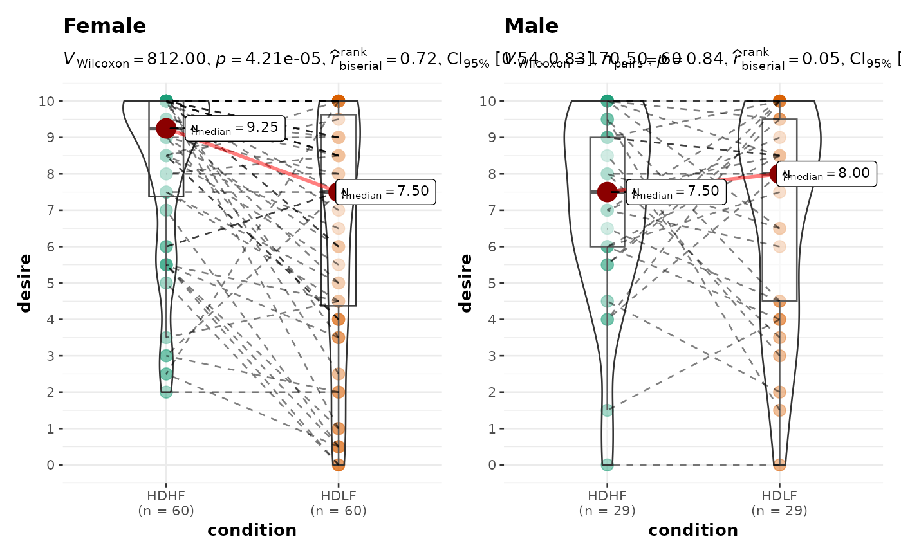

Violin plots for group or condition comparisons in within-subjects designs repeated across all levels of a grouping variable.
Source:R/ggwithinstats.R
grouped_ggwithinstats.RdA combined plot of comparison plot created for levels of a grouping variable.
Arguments
- data
A data frame (or a tibble) from which variables specified are to be taken. Other data types (e.g., matrix,table, array, etc.) will not be accepted. Additionally, grouped data frames from
{dplyr}should be ungrouped before they are entered asdata.- ...
Arguments passed on to
ggwithinstatspoint.path,centrality.pathLogical that decides whether individual data points and means, respectively, should be connected using
ggplot2::geom_path(). Both default toTRUE. Note thatpoint.pathargument is relevant only when there are two groups (i.e., in case of a t-test). In case of large number of data points, it is advisable to setpoint.path = FALSEas these lines can overwhelm the plot.centrality.path.args,point.path.argsA list of additional aesthetic arguments passed on to
ggplot2::geom_path()connecting raw data points and mean points.xlabLabel for
xaxis variable. IfNULL(default), variable name forxwill be used.ylabLabels for
yaxis variable. IfNULL(default), variable name forywill be used.p.adjust.methodAdjustment method for p-values for multiple comparisons. Possible methods are:
"holm"(default),"hochberg","hommel","bonferroni","BH","BY","fdr","none".pairwise.displayDecides which pairwise comparisons to display. Available options are:
"significant"(abbreviation accepted:"s")"non-significant"(abbreviation accepted:"ns")"all"
You can use this argument to make sure that your plot is not uber-cluttered when you have multiple groups being compared and scores of pairwise comparisons being displayed. If set to
"none", no pairwise comparisons will be displayed.bf.messageLogical that decides whether to display Bayes Factor in favor of the null hypothesis. This argument is relevant only for parametric test (Default:
TRUE).results.subtitleDecides whether the results of statistical tests are to be displayed as a subtitle (Default:
TRUE). If set toFALSE, only the plot will be returned.subtitleThe text for the plot subtitle. Will work only if
results.subtitle = FALSE.captionThe text for the plot caption. This argument is relevant only if
bf.message = FALSE.centrality.plottingLogical that decides whether centrality tendency measure is to be displayed as a point with a label (Default:
TRUE). Function decides which central tendency measure to show depending on thetypeargument.mean for parametric statistics
median for non-parametric statistics
trimmed mean for robust statistics
MAP estimator for Bayesian statistics
If you want default centrality parameter, you can specify this using
centrality.typeargument.centrality.typeDecides which centrality parameter is to be displayed. The default is to choose the same as
typeargument. You can specify this to be:"parameteric"(for mean)"nonparametric"(for median)robust(for trimmed mean)bayes(for MAP estimator)
Just as
typeargument, abbreviations are also accepted.point.argsA list of additional aesthetic arguments to be passed to the
ggplot2::geom_point().boxplot.argsA list of additional aesthetic arguments passed on to
ggplot2::geom_boxplot().violin.argsA list of additional aesthetic arguments to be passed to the
ggplot2::geom_violin().ggplot.componentA
ggplotcomponent to be added to the plot prepared by{ggstatsplot}. This argument is primarily helpful forgrouped_variants of all primary functions. Default isNULL. The argument should be entered as a{ggplot2}function or a list of{ggplot2}functions.package,paletteName of the package from which the given palette is to be extracted. The available palettes and packages can be checked by running
View(paletteer::palettes_d_names).centrality.point.args,centrality.label.argsA list of additional aesthetic arguments to be passed to
ggplot2::geom_point()andggrepel::geom_label_repel()geoms, which are involved in mean plotting.ggsignif.argsA list of additional aesthetic arguments to be passed to
ggsignif::geom_signif().ggthemeA
{ggplot2}theme. Default value istheme_ggstatsplot(). Any of the{ggplot2}themes (e.g.,ggplot2::theme_bw()), or themes from extension packages are allowed (e.g.,ggthemes::theme_fivethirtyeight(),hrbrthemes::theme_ipsum_ps(), etc.). But note that sometimes these themes will remove some of the details that{ggstatsplot}plots typically contains. For example, if relevant,ggbetweenstats()shows details about multiple comparison test as a label on the secondary Y-axis. Some themes (e.g.ggthemes::theme_fivethirtyeight()) will remove the secondary Y-axis and thus the details as well.xThe grouping (or independent) variable from
data. In case of a repeated measures or within-subjects design, ifsubject.idargument is not available or not explicitly specified, the function assumes that the data has already been sorted by such an id by the user and creates an internal identifier. So if your data is not sorted, the results can be inaccurate when there are more than two levels inxand there areNAs present. The data is expected to be sorted by user in subject-1, subject-2, ..., pattern.yThe response (or outcome or dependent) variable from
data.typeA character specifying the type of statistical approach:
"parametric""nonparametric""robust""bayes"
You can specify just the initial letter.
digitsNumber of digits for rounding or significant figures. May also be
"signif"to return significant figures or"scientific"to return scientific notation. Control the number of digits by adding the value as suffix, e.g.digits = "scientific4"to have scientific notation with 4 decimal places, ordigits = "signif5"for 5 significant figures (see alsosignif()).conf.levelScalar between
0and1(default:95%confidence/credible intervals,0.95). IfNULL, no confidence intervals will be computed.effsize.typeType of effect size needed for parametric tests. The argument can be
"eta"(partial eta-squared) or"omega"(partial omega-squared).bf.priorA number between
0.5and2(default0.707), the prior width to use in calculating Bayes factors and posterior estimates. In addition to numeric arguments, several named values are also recognized:"medium","wide", and"ultrawide", corresponding to r scale values of1/2,sqrt(2)/2, and1, respectively. In case of an ANOVA, this value corresponds to scale for fixed effects.trTrim level for the mean when carrying out
robusttests. In case of an error, try reducing the value oftr, which is by default set to0.2. Lowering the value might help.nbootNumber of bootstrap samples for computing confidence interval for the effect size (Default:
100L).
- grouping.var
A single grouping variable.
- plotgrid.args
A
listof additional arguments passed topatchwork::wrap_plots(), except forguidesargument which is already separately specified here.- annotation.args
A
listof additional arguments passed topatchwork::plot_annotation().
Examples
# for reproducibility
set.seed(123)
library(dplyr, warn.conflicts = FALSE)
library(ggplot2)
# the most basic function call
grouped_ggwithinstats(
data = filter(bugs_long, condition %in% c("HDHF", "HDLF")),
x = condition,
y = desire,
grouping.var = gender,
type = "np",
# additional modifications for **each** plot using `{ggplot2}` functions
ggplot.component = scale_y_continuous(breaks = seq(0, 10, 1), limits = c(0, 10))
)
#> Scale for y is already present.
#> Adding another scale for y, which will replace the existing scale.
#> Scale for y is already present.
#> Adding another scale for y, which will replace the existing scale.
